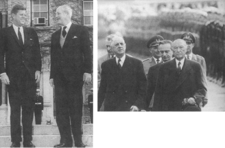

Kennedy ve Harold Macmillan Bermuda’da, Aralık 1961
Berlin krizi, Avrupa kıtasını bölen çizgi boyunca hemen hemen yirmi yıldan beri birbiri ile itişip kalkışan iki nüfuz küresinin kesinleşmesini işaretlemiştir. Bu sürecin ilk aşamasında, 1945-1948 döneminde, Stalin Doğu Avrupa ülkelerini uydu devletler haline dönüştürmek ve Batı Avrupa’yı tehdit etmek suretiyle Sovyet nüfuz küresini kurmuştur. İkinci aşamada, 1949-1956 döneminde, demokrasiler, NATO’yu kurmak, işgal bölgelerini Federal Alman Cumhuriyeti olarak bir araya getirmek ve Batı Avrupa bütünleşmesi sürecini başlatmak suretiyle tepki gösterdiler.
Bu bütünleşme dönemi sırasında, her iki kamptan da diğer küreyi dağıtmak için zaman zaman bazı girişimler olmuştur. Bütün bu planlar başarısızlıkla sonuçlandı. Stalin’in, Federal Cumhuriyet’i Batı kampından ayartmak amacıyla verdiği 1952 Barış Notası, kendisinin ölümü dolayısıyla başarılı olamadı. Dulles’ın, Doğu Avrupa’nın “kurtarılması” ile ilgili stratejisinin faydasızlığı, 1956 başarısız Macar ayaklanması esnasında görüldü. Kruşçev’in 1958 Berlin ültimatomu, Federal Cumhuriyet’i Batı’dan koparmak için bir başka girişimdi. Fakat sonuçta Sovyetler, Doğu Alman uydusu üzerindeki kontrollerini sıkılaştırmaktan başka bir şey yapamadılar. Küba füze krizinden sonra, Sovyetler bütün dikkatini gelişmekte olan dünya ülkelerine sızmaya harcadı. Sonuç, Avrupa’da iki kutuplu bir istikrar idi ki, bu istikrarın paradoksal doğası, büyük Fransız filozofu ve siyaset bilimcisi Raymond Aron tarafından 1958’de şöyle özetlenmiştir:
“Avrupa’nın bugünkü durumu anormal veya anlamsızdır. Fakat açıktır, sınır çizgilerinin nerede olduğunu herkes bilir ve ne olacağından da kimse endişe etmez. Demir Perde’nin öte tarafında bir şey olursa –bir yıl önce böyle bir deneyim geçirdik– bu tarafta hiçbir şey olmaz. Avrupa’nın, doğru veya yanlış, böyle açık bir şekilde bölünmüş olması, başka herhangi bir düzenlemeden daha az tehlikeli görülüyor.”{821}
Atlantik Topluluğu içindeki farklılıkların su yüzüne çıkmasına imkân tanıyan da kesin olarak bu istikrardır. Berlin krizinden hemen sonra, Büyük Britanya’dan Macmillan, Fransa’dan de Gaulle ve Birleşik Devletler’den Kennedy, ittifakın doğası, atom silahlarının rolü ve Avrupa’nın geleceği üzerindeki çatışan bakış açılarını uzlaştırmak zorunda kalmışlardır.
Macmillan, ülkesinin artık büyük bir devlet olmadığı acı gerçeği ile açık bir şekilde karşı karşıya gelen ilk İngiliz başbakanıdır. Churchill, Amerika ve Sovyetler Birliği ile eşit statüde iş yapmıştı. Her ne kadar konumu gerçek güç dengesini yansıtmıyorsa da, Churchill istedikleri ile gerçek arasındaki farkı, dehası yoluyla ve Büyük Britanya’nın savaş zamanındaki kahramanca mücadelesini ileri sürerek kapatıyordu. Churchill savaştan hemen sonra muhalefet lideri iken ve 1953’te Stalin’in ölümünden sonra tekrar başbakan olunca Moskova ile görüşme yapılması için bastırırken, bunu, büyük bir devletin sözcüsü olarak yaptı; her ne kadar ön sırada değil ise de, bütün diğer liderlerin hesaplarını etkileyecek güçteydi. Süveyş krizi boyunca Eden, tek taraflı girişimlerde bulunacak kadar otonom büyük bir devletin hükümet başkanı gibi hareket ediyordu. Macmillan, Berlin krizi ile karşılaştığı zaman, Büyük Britanya’nın süper devletlerin stratejik hesaplarını değiştirebilecek kapasitede bir devlet olduğu hayali, artık mevcut değildi.
Uygar, zarif bir şüpheci olan Macmillan, eski tip İngiliz muhafazakâr politikacılarının son örneği idi. Büyük Britanya’nın, dünyanın üstün gücü olduğu ve bayrağının kürenin hemen hemen her köşesinde dalgalandığı Edward döneminin bir ürünüydü. Her ne kadar şeytani bir mizah duygusuna sahip ise de, Birinci Dünya Savaşı’ndan sonra gücün zirvesinden düşme deneyimi geçiren İngiltere’nin o zamandan beri devamlı inişte olmasının kendi zamanında da devam etmesi, Macmillan’da daimi bir melankoli havası yaratmıştı. Macmillan, Oxford’da Christ Church’de, sınıfından savaştan sağ kurtulan dört arkadaşı ile buluşması hikâyesini dokunaklı bir şekilde anlatırdı. 1984’te kömür işçilerinin grevinde –o zaman aktif politikadan çekileli yirmi yıl olmuştu– her ne kadar Mrs. Thatcher’a karşı büyük saygı duyuyor ve ne yapmak istediğini anlıyorsa da, kendisinin hiçbir zaman Birinci Dünya Savaşı’nda savaşa gönderdiği ve kendilerini feda eden insanların çocuklarına karşı sonuna kadar savaşamayacağını söyledi.
Macmillan, ülkesinin aşağıya doğru inişe geçen küresel rolünün başlangıcını işaret eden Süveyş yenilgisinden sonra 10 Downing Street’e adeta itilmişti. Macmillan elini, canlılıkla ancak biraz gönülsüzce oynadı. Eski bir maliye bakanı olarak, Büyük Britanya’nın ekonomisinin inişte olduğunu ve askeri rolünün, hiçbir zaman atom süper güçlerinin geniş askeri olanakları ile kıyaslanamayacağını biliyordu. Büyük Britanya, ilk kez kendisine önerildiği zaman, Ortak Pazar’a girmeyi reddetmişti. 1938’de Chamberlain’ın Çekoslovakya’dan söz ederken kullandığı “İngilizlerin az tanıdığı küçük, uzak bir ülke” deyimi, yüz elli yıl dünyanın diğer yüzünde sömürge savaşları yapan İngiltere’nin, birkaç yüz mil ötedeki Avrupa’da olan krizleri nasıl değerlendirdiğinin çok doğru bir açıklaması idi.
Fakat 1950’li yılların sonunda, Büyük Britanya, artık Avrupa’ya uzaktan bakan ve Avrupa’yı, zaman zaman kuvvetlerinin olası diktatörlere haddini bildirmek için müdahale etmeye gittiği bir yer olarak gören bir ülke değildi. Macmillan bu nedenle kendini uzakta tutma politikasını tersine çevirerek, Avrupa topluluğunun üyeliği için başvuruda bulundu. Ancak Süveyş yenilgisine karşın, Macmillan’ın en önde gelen arzularından birisi, Büyük Britanya’nın Birleşik Devletler’le olan “özel ilişkisini” geliştirmek olmuştur.
Büyük Britanya, kendisini yalnızca bir Avrupa devleti olarak görmedi. Olaylar şunu göstermişti ki, İngiltere’nin başına ne geldiyse hep Avrupa’dan, kurtuluşu da hep Atlantik Okyanusu’nun öte kıyısından gelmiştir. Macmillan, Avrupa’nın güvenliğinin Birleşik Devletler’Ie ilişkiyi azaltmakla artacağı şeklindeki Gaullist görüşü kabul etmemiştir. Her şeyden sonra, Büyük Britanya, en azından Fransa kadar Berlin için çarpışmaya hazır olacaktı. Fakat İngiltere’yi harekete geçiren neden, müttefiklerin işgal hakları denilen belirsiz bir kavramı doğrulamak değil, Amerika’nın küresel güç dengesinin tehdit edildiği yolundaki değerlendirmesini desteklemek olurdu.
Süveyş’ten sonra, Fransa ve Büyük Britanya, Amerika’nın elinden tattıkları aşağılanmadan birbirine taban tabana zıt sonuçlar çıkardılar. Fransa bağımsızlığını hızlandırdı; Büyük Britanya Amerika ile ortaklığını kuvvetlendirmek yolunu seçti. İngiliz-Amerikan ortaklığı hayalleri, gerçekte İkinci Dünya Savaşı’ndan önceye dayanır ve o tarihten beri bu görüşe önem verilmiştir. 1935’te, Başbakan Stanley Baldwin Royal Albert Hall’da yaptığı bir konuşmada, bunları ana hatlarıyla şöyle tanımlamıştır:
“Daima şuna inanmışımdır ki, dünyanın neresinde olursa olsun, ister Avrupa’da ister Doğu’da savaşa karşı en büyük güvenlik, İngiliz İmparatorluğu’nun Amerika Birleşik Devletleri ile yakın işbirliğindedir... Arzu edilen sonuç oluşana kadar yüzyıl geçebilir veya hiçbir zaman gerçekleşmeyebilir. Fakat zaman zaman düşlerimiz gerçek olur. Geleceğe bakıyorum ve dünyada barış ve adalet kuvvetlerinin birliğini görüyorum ve insanlar henüz açıkça savunamasalar da, bir gün bizleri izleyenlerin bunu göreceklerini düşünmekten kendimi alamıyorum...”{822}
Bu düşün gerçekleşmesi için yüzyılın geçmesine gerek kalmadı, İkinci Dünya Savaşı ile başlayarak Büyük Britanya ve Birleşik Devletler, çok farklı tarih deneyimlerinin süzgecinden geçmiş olsalar da, ortak gereksinmeler nedeniyle birbirine bağlandılar.
Bu iki ulus arasındaki kuvvetli bağlantıyı sağlayan önemli bir faktör, Büyük Britanya’nın kendisini değişen şartlara uydurmaktaki olağanüstü yeteneğidir. Dean Acheson’ın işaret ettiği gibi, Büyük Britanya’nın, kendisini çok uzun süre imparatorluk hayaline kaptırdığı ve Avrupa’da kendisine çağdaş bir rol tanımlamakta başarısız olduğu doğru olabilir.{823} Diğer taraftan, Washington’la ilişkilerinde, Büyük Britanya, hemen hemen her gün göstermiştir ki, eski anayurt olarak temel sorunlarda kendisini aldatmamıştır. Geleneksel fayda ve risk dengeleme metodu ile Amerikan politikasına şekil veremeyeceklerini hesaplayan kurnaz İngiliz liderleri, özellikle Süveyş’ten sonra daha büyük etki yolunda yürümeyi tercih etmişlerdir. Her iki partiden İngiliz liderler, kendilerini Amerikan karar verme sürecinin öyle zorunlu bir paçası olarak kabul ettirmişlerdir ki, başkanlar ve çevreleri, Londra’ya danışma konusuna, zayıf bir müttefikin gönlünü olmak için yapılan bir iyilik olarak değil, fakat kendi yönetimlerinin hayati bir parçası olarak bakmaya başlamışlardır.
Ancak Büyük Britanya’nın uluslararası ilişkilerde Amerikan felsefesini paylaştığı söylenemez, İngilizler, Amerikalıların, insanın kusursuz olduğu görüşünü hiçbir zaman paylaşmamışlar ve moral kesin yargılarda bulunmaya yanaşmamışlardır. Kendi felsefelerinin diliyle, İngiliz liderler genellikle Hobbes [Kuvvetli bir hükümetin, özellikle mutlak bir monarşinin çarpışan kişisel çıkarları ve istekleri kontrol etmek için zorunlu olduğuna inanan İngiliz Thomas Hobbes felsefesi (mütercimin notu)] taraftarı olmuşlardı, insanlardan daima kötü şeyler bekleyen bu insanlar, pek seyrek olarak düş kırıklığına uğramışlardır. Dış politikada, Büyük Britanya daima ahlaki egoizmin uygun bir biçimini uygulamak eğiliminde olmuştur: Büyük Britanya için iyi olan bir şey, dünyanın geri kalan bölümü için de iyidir.
Böyle bir kavramı taşımak için, doğuştan gelen bir üstünlük duygusu değilse bile, makul bir kendine güven duygusuna ihtiyaç vardır. XIX. yüzyılda, bir Fransız diplomat İngiliz Başbakanı Palmerston’a, Fransa’nın Palmerston’un gömleğinin manşetinden diplomatik kart çıkarmasına alışık olduğunu söyleyince (kâğıt oyununda hile yapmak anlamında) cesur İngiliz “Kartları oraya Tanrı koydu” demişti. Yine de Büyük Britanya, ulusal egoizmini öyle bir ılımlılık sezgisi ile uygulamaya koymuştur ki, bunun herkesin iyiliğine olduğu zannı, sık sık doğrulanmıştır.
Macmillan zamanında, Büyük Britanya, büyük devlet statüsünden, etkili devlet statüsüne geçişini tamamladı, Macmillan, İngiliz politikasını Amerikan politikasının içine koymaya ve Washington’la ilişkileri beceriyle idare ederek İngiliz seçeneklerinin çeşitliliğini artırmaya karar verdi. Hiçbir zaman felsefi veya kavramsal bir husus için kimse ile çatışmadı ve anahtar durumundaki Amerikan politikalarına açıkça pek seyrek karşı koydu. Drama perde gerisinden şekil vermeğe çalışırken, orta sahneyi memnuniyetle Washington’a bıraktı. De Gaulle, kendisini ihmal etmenin başkalarına zarar vereceğini sık sık ortaya koymuştu; Macmillan, Birleşik Devletler için Britanya’nın görüşlerini almayı o kadar kolaylaştırmıştı ki, onu ihmal etmek gerçekten utanç verici bir şey olurdu.
Berlin krizi esnasındaki taktikleri de bu yaklaşımı doğrular. Berlin’e giriş sorunu, ona göre bir nükleer felakete değmezdi. Diğer taraftan, Amerika ile bağlantının tehlikeye sokulması daha büyük bir felaketti. Bir nükleer çatışma da olsa Amerika’nın yanında olacaktı ki, bu davranış Amerika’nın birçok müttefikinin temin edebileceğinden fazla bir şeydi. Ancak Macmillan, bu nihai seçenekten önce mevcut alternatifleri gözden geçirmeye de kararlıydı. Gerekli olan şeyi seve seve yapan Macmillan, hızlı Amerikan hareketlerini frenlemek ve İngiliz halkına “liderlerinin anlayış ve anlaşmaya ulaşmak için her çabayı göstermiş”{824} olduğunu ispatlamak amacıyla Batı’nın en önde gelen barış savunucusu olarak sundu.
Araçlar, son derece hızlı bir şekilde amaçları gerçekleştirdi. Macmillan, beceri ile yönetilen görüşmelere girişerek Sovyet meydan okumasının verdiği sıkıntıyı gidermeyi deneyecek kadar kendisine güveniyordu. Macmillan’ın düşünce tarzına göre, diplomatik sürecin kendisi, sonuçsuz bir görüşmeden başka bir görüşmeye geçerek, düşünmeden ve acele ile hareket eden Sovyet liderinin koyacağı süreleri uzatmak suretiyle Kruşçev’in ültimatomlarının yarattığı tehdidi etkisiz hale getirmeye yarayabilirdi.
Macmillan, Adenauer’in aşırı memnuniyetsizliğine karşın, Kruşçev, bu seyahat esnasında bile birkaç kez ilk ültimatomunu tekrarladıysa da, Sovyetler Birliği’ne 1959 Şubat-Mart aylarında on bir günlük uzun bir yolculuk yaptı.. Herhangi bir önemli sonuç elde edemezken, Kruşçev, onun mevcudiyetinden yararlanarak tehditlerini tekrarladı durdu. Ancak başbakan, yılmadan ve soğukkanlılıkla Kruşçev’in koyduğu süreleri geçirmek için en pratik araç olarak bir dizi konferanslar düzenlemek amacından vazgeçmedi. Hatıralarında şöyle yazıyor:
“Barış içinde bir arada yaşamanın (o zamanın jargonu buydu) bütün dünyaya egemen olması için, bir noktadan ileriye başka bir noktaya doğru ilerleyecek bir dizi toplantı kavramını ileri sürdüm.”{825}
Ancak hedef yalnızca konuşma olunca, bu konuşmalar, onları kesmek için en hazırlıklı olan tarafın veya bu izlenimi veren tarafın insafına kalmış oluyordu. Böylece Kruşçev, gerçekte neyin “görüşülebilir” olduğunu belirleme olanağını buldu. Diyalogun devam etmesini hararetle isteyen Macmillan, Sovyet gündeminde görüşülmesi nispeten zararsız olan maddeleri bulmakta büyük bir hüner gösterdi. 27 Kasım 1958’de Kruşçev’in Berlin hakkındaki resmi notasının alındığı tarihten bir gün sonra, Macmillan Dışişleri Bakanı Selwyn Lloyd’a şunu yazmıştı: “Görüşmelerden kaçınamayız. Bu görüşmeler nasıl yapılacak? Görüşmelerin bizi birleşmiş bir Almanya’nın geleceğinin tartışılmasına ve olasılıkla ‘boşaltma planlan’na götürmesi zorunlu mu?”{826}
Çeşitli boşaltma planlarının ortak özelliği, Almanya, Polonya ve Çekoslovakya olarak tanımlanan Orta Avrupa’da sınırlı silahlar bulunan bölgeler oluşturmak ve nükleer silahları bu ülkelerden geri çekmekti. Macmillan ve daha az derecede olmakla beraber Amerikan liderleri için bu silahların bulunduğu yerlerin sembolik bir önemi vardı. Nükleer strateji, Amerikan nükleer silahlarına (Büyük bölümü Avrupa’da değildi) dayanacağına göre, boşaltma planlarının Sovyetlerle tartışılması, Macmillan’a göre, zaman kazanmanın zararsız bir şekliydi.
Adenauer, bütün bu planlara karşı çıktı; çünkü bir kez Amerikan atom silahları Almanya’dan çekildikten sonra bunlar Amerika’ya gönderilecek ve böylece Adenauer’e göre Avrupa ile Amerika arasındaki nükleer savunmanın çok önemli politik bağlantısı kopmuş olacaktı. Onun veya savunma uzmanlarının mantığına göre, nükleer silahlar Alman topraklarında bulundurulduğu sürece, Sovyetler Birliği bu silahları ortadan kaldırmadan Orta Avrupa’ya saldırma riskini göze alamazdı. Böyle bir saldırı nükleer silahlar gerektirdiğinden, Amerika’nın karşı cevabı hemen hemen otomatik olacaktı.
Amerikan nükleer silahları sökülüp Amerika’ya gönderilirse, konvansiyonel silahlarla Almanya’ya saldırı her zaman olası olacaktı. Ülkesi üzerinde yapılacak tahribatın büyüklüğü ışığında, Adenauer, Amerikan liderlerinin nükleer savaşı ilk başlatan taraf olup olmayacağı hususunda emin değildi. Böylece, Berlin’le ilgili olarak görüşme seçeneklerinin araştırılması, Atlantik İttifakı’nın askeri stratejisi üzerinde devam eden tartışmanın bir şekli halini aldı.
Macmillan veya Eisenhower’ın tek başına diplomatik bir girişim başlattığı her durumda, diğerinin tepkisi, devlet adamlarının ilişkilerinde kibrin hiç de az görülen bir şey olmadığını gösteriyor. Her ne kadar ikisi iyi birer kişisel dost iseler de, 1959 yılının başlarında Eisenhower, Macmillan’ın Moskova’yı ziyaretinden rahatsızlık duydu; bunun gibi aynı yılın sonbaharında da, Macmillan Eisenhower’ın Kruşçev’i Camp David’e davet ettiğini öğrendiği zaman kabalık yaptı:
“Dışişleri bakanları toplantısında bir ilerleme kaydedilmezse, zirve toplantısı yapılmaz kuralını koyan başkan, şimdi bundan kurtulmak istiyor. Düşünebildiği tek şey, tartışmanın yerine eğlenceyi koymak. Bu nedenle, Kruşçev’den Amerika‘da kendisiyle birlikte kalmasını rica ediyor ve Rusya‘yı ziyaret edeceğine söz veriyor. Bütün bunlar, oldukça tuhaf bir diplomasi gibi görünüyor. “{827}
Bu diplomasi tuhaf değil, kaçınılmazdı. Büyük Britanya’nın Amerika’dan ayrılmayacağını fark eden Kruşçev, çabalarını Eisenhower üzerinde yoğunlaştırdı. Kruşçev’in görüşüne göre, Macmillan Washington’u görüşmelere ikna etmekle amacına hizmet etmişti. Çünkü, nihai analizde, Kruşçev’in peşinde olduğu şeyi verebilecek tek görüşmeci, Amerikan başkanı idi. Böylece, bütün önemli görüşmeler Camp David’de Kruşçev ile Eisenhower ve sonradan Viyana’da Kruşçev ile Kennedy arasında yapıldı. Ancak Amerika ve Sovyetler Birliği, uluslararası diyalogu ne kadar kendi tekellerine aldılarsa da, NATO müttefikleri arasındaki bazı devletler de kendileri için o kadar manevra serbestliği peşinde oldular. Sovyetlerin Batı Avrupa’yı tehdidi ve Moskova’dan korkma ortak duygusu azaldıkça, Atlantik İttifakı’ndaki uyuşmazlıklar daha az tehlikeli olmaya başladı ve de Gaulle bu fırsattan yararlanarak daha bağımsız bir Avrupa politikasını teşvik etmeye başladı.
Fakat Büyük Britanya’nın kimin yönetimini seçeceği belliydi. Macmillan, Avrupa yerine Amerika’dan sonra ikinci devlet olmayı yeğlediğinden, de Gaulle’ün düşüncesini desteklemesi için bir nedeni yoktu ve sebep ne olursa olsun, Avrupa’yı Amerika’dan ayıracak hiçbir harekete katılmadı. Bununla beraber, hayati İngiliz çıkarlarını savunurken Macmillan da de Gaulle kadar azimli idi. Bu durum, Skybolt olayı olarak bilinen olayda açıkça ortaya çıktı.
Büyük Britanya, gittikçe yaşlanan bombardıman filosunun ömrünü uzatmak için o zamanlar geliştirilme sürecinde olan Amerika’nın uzun menzilli havadan ateş edilen füzelerinden Skybolt’u satın almaya karar verdi. 1962 sonbaharında, Kennedy Yönetimi, hiçbir uyarıda bulunmadan Skybolt projesini görünüşe göre teknik nedenlerle iptal etti. Gerçekte, füzelerden daha fazla tehlikeye maruz olduğu düşünülen uçaklara bağımlılığı azaltmak ve İngilizlerin otonom İngiliz nükleer kapasitesi oluşturmak yönündeki çabalarını engellemek amacındaydı. Amerika’nın Büyük Britanya’ya önceden danışmadan aldığı bu tek taraflı karar, İngilizlerin bombardıman filolarının hızla eskimeye ve çürümeye terk edilmesi anlamını taşıyordu. Fransızların, Washington’a bağımlılıkla ilgili uyarıları doğrulanmış gibi görünüyordu.
Ancak Skybolt olayının bundan sonraki aşaması, Amerika ile “özel ilişkiler”in yararlarını gösterdi. Macmillan, uzun zamandan beri kuvvetlendirmeye çalıştığı Amerika ile bağlarının sağladığı olanakları bir araya getirerek ve bu konuda çok da nazik olmadan bu harekete cevap verdi:
“Skybolt’un geliştirilmesinden doğan zorluklar, Britanya’nın bağımsız bir nükleer kapasite oluşturmasına engel olmak için kullanılıyor ise, veya böyle görünüyorsa, sonuçlar gerçekten çok ciddi olabilir. Bu durum, hem bağımsız bir nükleer kapasite oluşturmak isteyenler, hem de buna karşı olanlar arasında derin bir kızgınlık yaratacaktır. Bu, ulusal gururu incitecektir ve elimizdeki bütün olanaklarla buna karşı direnilmelidir.”{828}
Kennedy ve Macmillan, 21 Aralık’ta Nassau’da buluştular ve İngiliz-Amerikan nükleer ortaklığının modernleştirilmesi için görüş birliğine vardılar. Amerika, Büyük Britanya’nın Skybolt projesinden doğan zararını, beş adet Polaris denizaltı ve füzeleri satmakla karşılayacaktı. Büyük Britanya, kendi nükleer savaş başlıklarını kendisi geliştirecekti. Nükleer stratejinin merkezi kontrolü konusundaki Amerikan endişesine cevap vermek üzere, Büyük Britanya, bu denizaltıları “yüksek ulusal çıkarların tehlikede olduğu durumlar hariç”, NATO’nun “emrine vermeye” razı oldu.{829}
İngiliz kuvvetlerinin NATO ile bütünleşmesi büyük ölçüde önemsizdi. Büyük Britanya, “yüksek ulusal çıkarları” söz konusu olduğu zaman serbest olacağına ve nükleer silah kullanımı yüksek ulusal çıkarlar tehlikede olmadığı zaman düşünülemeyeceğine göre, Nassau Anlaşması, Fransa’nın çatışma yoluyla elde etmeyi düşündüğü hareket serbestisinin aynısını Büyük Britanya’ya etkili bir şekilde danışma yoluyla sağlamış oldu. İngiliz ve Fransızların kendi nükleer silahlarına olan tavırları arasındaki fark, Büyük Britanya’nın şekli, öze kurban etmesine karşılık, de Gaul’ün Fransa’nın kimliği üzerinde ısrarla durarak şekille özü eşit düzeye koyması olmuştur.
Kuşkusuz, Fransa tamamen farklı bir durumdaydı; çünkü bu ülkenin, Amerika’nın kararları üzerinde Büyük Britanya’nın sahip olduğu nüfuzu kullanması söz konusu olamazdı. Bu nedenle, de Gaulle’ün liderliği altında Fransa, Atlantik işbirliğinin doğası ile ilgili felsefi sorununu ortaya attı. Bu konu, Avrupa liderliği için bir yarışmaya ve Amerika için de Avrupa diplomasisi ile yeniden tanışmaya dönüşmüştür.
Birleşik Devletler, İkinci Dünya Savaşı’ndan sonra dünya işleri üzerinde daha önce hiçbir ülkeye nasip olmayan bir şekilde söz sahibi olmuştur. Bu dünya nüfusunun küçük bir bölümü ile dünya mal ve hizmet üretiminin hemen hemen üçte birini elinde tutma olanağının bir gerçeği idi. Nükleer teknolojide eriştiği düzey ile Amerika, herhangi bir rakip veya rakipler kombinezonuna karşı çok büyük bir üstünlük sağlamıştı.
Birkaç on yıl boyunca, şartların lehlerine olması Amerikan liderlerinin bir şeyi unutmalarına sebep oldu; o da, bu harap olmuş, zaman zaman güçsüz ve bu nedenle yumuşak Avrupa’nın bu tutumunun, iki yüzyıl boyunca dünyayı yöneten bu kıtanın doğal tutumu olmadığı gerçeği idi. Amerikalı liderler, endüstri devrimini başlatan Avrupa dinamizmini, ulusal egemenlik kavramını doğuran politik felsefeyi ve üç yüzyıl boyunca karmaşık güç dengesi sistemini çalıştıran Avrupa tarzı diplomasiyi unuttular. Avrupa, Amerika’nın vazgeçilmez yardımı ile toparlanırken, diplomasisinin bazı geleneksel örneklerinin tekrar görülmesi doğaldı; özellikle de modern devlet yönetiminin Richelieu zamanında doğduğu ülke olan Fransa’da durum böyleydi.
Kimse bu gereksinimi Charles de Gaulle kadar kuvvetle hissetmedi. 1960’lı yıllarda, Birleşik Devletler’le çekişmenin en yüksek noktasına erişildiği zamanda, Fransa cumhurbaşkanına, büyüklük hayali ile hareket ettiği suçlamasını yapmak modaydı. Oysa sorun, kesinlikle bunun aksi idi: Başarısızlık ve zayıflık duygusunun yaygın olduğu bir ortamda, ülkenin kişiliğinin restore edilmesi nasıl mümkün olacaktı? Fransa, Amerika gibi üstün bir güç değildi; Büyük Britanya gibi ikinci Dünya Savaşı’na, birleştiren ve eğiten bir deneyim olarak bakmıyordu. Çok az ülke, Birinci Dünya Savaşı’nda Fransa’nın kaybettiği kadar gençlerini kaybetmenin acısını çekmişti.{830} Bu felaketten kurtulanlar, Fransa’nın bir kez daha böyle bir şeye katlanamayacağının farkındaydılar, İkinci Dünya Savaşı korkulu rüyayı gerçek haline getirdi. Fransa’nın 1940’taki çöküşü, askeri olduğu kadar da, psikolojik bir çöküştü. Fransa teknik olarak savaştan galip olarak çıktıysa da, Fransız liderler çok iyi biliyorlardı ki Fransa başkalarının çabaları ile kurtulmuştu.
Barış, huzur getirmedi. Dördüncü Cumhuriyet, bir öncekinin yaşadığı aynı hükümet istikrarsızlığını yaşadı ve buna ek olarak sömürgeleri terk etme döneminin ıstıraplarını çekti. 1940’ta aşağılanan Fransız ordusu, daha yeniden kurulmadan, her ikisi de yenilgi ile biten Çinhindi ve sonra da Cezayir savaşlarına girmek zorunda kaldı, istikrarlı bir hükümetten yana şanslı olan ve toptan zaferin verdiği bir kendine güven duygusu içinde olan Birleşik Devletler, kendisini, değerlerinin dikte ettiği herhangi bir göreve samimi olarak atabilirdi. Bir kuşak boyunca anlaşmazlıklarla sarsılan ve onlarca yılı aşağılanma ile geçiren bir ülkeyi yöneten de Gaulle, politikaları pragmatik kritere göre değil, Fransızların kendine saygı duygusunu yeniden canlandırmaya yararı bakımından değerlendiriyordu.
Fransa ile Birleşik Devletler arasındaki anlaşmazlık gittikçe acılaşmaya başladı; çünkü birbirlerini tamamen yanlış anlayan iki taraf, hiçbir zaman aynı konuyu konuşmuyorlardı. Her ne kadar gösterişe meraklı olmayan kişiler olsalar da, Amerikan liderleri kendi pratik reçetelerine çok güvenmek eğilimindeydiler. Halkı, birçok gerçekleşmeyen istek ve rüyadan sonra şüpheci olan de Gaulle, Fransız toplumunun ruhunun derinliklerine işlemiş güvensizlik duygusunu, mağrur ve kabadayı tavırlı olmak suretiyle yenmeye çalıştı. Amerikan liderliğinin kişisel alçakgönüllüğü ve tarihi kibirliliği ile de Gaulle’ün kişisel kibirliliği ve tarihi alçakgönüllüğü arasındaki etkileşim, Amerika ile Fransa arasındaki psikolojik uçurumu belirlemiştir.
Washington, Batı ittifakı üyeleri arasında çıkarlar bakımından değişmez bir birlik olduğunu kabul ettiğinden, karşılıklı görüşmelerin her anlaşmazlığı çözecek sihirli formül olduğuna inanmıştı. Amerikan görüşüne göre, bir ittifak halkın gözü önünde olan bir şirket gibiydi; şirket içindeki nüfuz, her ortağın sahip olduğu pay oranına göreydi ve bir devletin ortak çabaya maddi katkısı ile orantılı olarak hesaplanmalıydı.
Fransa’nın yüzyıllar boyunca yürüttüğü diplomasi geleneğinde, onu bu sonuca götürecek hiçbir şey yoktu. Richelieu’den beri, Fransa’nın girişimleri değişmez bir şekilde hep tehlike ve ödül hesaplamalarına dayandırılmıştı. Bu geleneğin bir ürünü olarak, de Gaulle danışma mekanizmasının doğasından çok, anlaşmazlık olasılığına karşı seçenekleri bir araya getirmekle ilgileniyordu. De Gaulle, bu seçeneklerin pazarlık şansını arttıracağına inanırdı. De Gaulle’e göre, uluslar arasındaki sağlam ilişkiler, anlaşmazlıkları çözmek için resmi prosedürlere değil, çıkar hesaplarına dayanıyordu. Uyumluluğu doğal bir durum olarak kabul etmiyor, çıkar çatışmalarından doğan ve oluşturulan bir sonuç olarak görüyordu:
“ ‘Doğa tarafından yetenekleri sınırlandırılmış’ olan insan, ‘isteklerinde hiçbir sınır tanımaz.’ Dünya birbirine karşıt kuvvetlerle doludur. Kuşkusuz, insan aklı, bu rekabetin kanlı çatışmalara dönüşerek dejenere olmasını önlemekte çoğunlukla başarılı olmuştur. Fakat çabaların yarışması yaşamın bir gereğidir... Son analizler, her zaman olduğu gibi, dünyanın yalnızca denge kurulması halinde barışa kavuşacağını göstermektedir.”{831}
De Gaulle’le olan kısa tanışmam, onun prensipleri ile de kati bir şekilde karşılaşmamı sağladı, ilk kez karşı karşıya gelmemiz, Nixon’ın 1969 Mart Paris ziyaretinde oldu. Elysee Sarayı’nda de Gaulle büyük bir resepsiyona ev sahipliği yapıyordu. De Gaulle’ün bir yardımcısı kalabalıkta beni buldu ve Fransız cumhurbaşkanının benimle konuşmak istediğini söyledi. Bir çeşit şaşkınlık içinde bu üstün şahsiyete yaklaştım. Beni görür görmez, etrafındaki gruptan ayrılarak tek kelime selamlama sözcüğü kullanmadan veya onun yerine geçecek nazik bir söz söylemeden bana şu soruyu sordu “Vietnam’dan niçin çıkmıyorsunuz?” Biraz çekinerek, tek taraflı kararla çekilmenin Amerika’nın saygınlığını yitirmesine yol açacağını söyledim. De Gaulle etkilenmemişti ve böyle bir saygınlık yitirmenin nerede olabileceğini sordu. Ortadoğu’yu söyleyince mesafeli tutumu bir çeşit melankoliye dönüştü ve şunu söyledi: “Çok garip. Ben Ortadoğu’da güvenilirlik sorunu olanların sizin düşmanlarınız olduğunu düşünmüştüm.”
Ertesi gün, Fransız Cumhurbaşkanı ile bir toplantıdan sonra, Nixon beni, de Gaulle’ün ulus-devletlerden oluşan bir Avrupa görüşü (meşhur Europe de patries) üzerinde yorum yapmaya davet etti. Delice bir cesaretle (Çünkü de Gaulle ikinci derece adamlarla ve yardımcıları yanında bir konuyu tartışmazdı) de Gaulle’e, Almanya’nın, henüz tanımladığı Avrupa’yı hegemonyası altına almasını önlemek için Fransa’nın ne önerdiğini sordum. De Gaulle açıkça bu soruyu uzun bir cevaba değer görmeyerek, Adenauer’le devamlı bir dostluk anlaşması imzalamasının üzerinden yalnızca altı yıl geçmişken kısaca “Par la guerre” (Savaşla) diye cevapladı.
Fransız ulusal çıkarlarına aşırı derecedeki bağlanışı, de Gaulle’ün soğuk ve ödün vermeyen diplomasi tarzını şekillendirmiştir. Amerikan liderleri, ortaklık üzerinde dururken, de Gaulle devletlerin kendi güvenliklerini sağlama zorunluluğunu vurgulamıştır. Washington, ittifakın her üyesine genel görevin bir bölümünü yüklemek isterken, de Gaulle bu şekildeki bir işbölümünün Fransa’ya ikinci derece bir rol vereceğine ve Fransa’nın kimlik duygusunu yok edeceğine inanıyordu:
“Bir büyük devletin, ne kadar dost olursa olsun, kaderini başka bir devletin kararlarına bırakması hoşgörü ile karşılanabilecek bir durum değildir... Başka bir ülkeyle bütünleşen bir ülke, ulusal savunmasına ilgisini kaybeder; çünkü artık ondan sorumlu değildir.”{832}
Bu sözler, de Gaulle’ün kısa açıklama ile öneriler yapmak ve reddedilmesi durumunda tek taraflı olarak uygulamaya gitmek şeklindeki hemen hemen klişeleşmiş diplomatik prosedürünü açıklamaktadır. De Gaulle için hiçbir şey, Fransızların kendileri ve başkaları tarafından kendi serbest iradeleri ile hareket ediyor görünmelerinden daha önemli değildi. De Gaulle, 1940 aşağılanmasını, katı ve ödün vermeyen bir liderlikle üstesinden gelinebilecek geçici bir gerileme olarak kabul etti. Onun düşünce tarzına göre, Fransa hiçbir zaman ikinci dereceye düşmüş olma görünümünü kabul edemez, çekindiği ve saygı duyduğu Amerikan müttefikine karşı bile böyle davranırdı:
“...Birleşik Devletler’e gelince –zengin, aktif ve güçlü– (Fransa) kendisini bağımlı durumda buldu. Fransa, mali çöküntüden kaçınmak için sık sık onun yardımına gereksinim duydu. Askerlerine silah sağladığı ülke Amerika idi. Fransa’nın güvenliği, tamamen onun korumasına bağlı idi... Bütünleşme görüntüsü altındaki bütün bu işler, Amerikan otoritesini bir temel varsayım olarak kabul etmek demekti. Uluslar üstü Avrupa projesi denilen projede de durum buydu ve Fransa böyle bir Avrupa içinde kaybolacaktı... Politik gerçekliği, ekonomik atılımı, savunma kapasitesi olmayan bir Avrupa, bu nedenle, Sovyet bloku karşısında kendi politikası, ekonomisi ve savunması olan büyük bir Batı devletinin (Amerika Birleşik Devletleri’nin) bağımlısından başka bir şey olamazdı.”{833}
De Gaulle, prensip olarak Amerikan karşıtı değildi. Fransız ve Amerikan çıkarlarının gerçekten birbirine yakın olduğu zamanlar işbirliği yapmaya istekliydi. Örneğin Küba füze krizi esnasında, Amerikan yetkilileri müttefiklerinden gördüğü en kayıtsız şartsız desteği de Gaulle’den görünce çok şaşırmışlardı. Orta Avrupa’da çeşitli boşaltma planlarına da Amerikan askeri kuvvetlerini uzaklaştıracağı ve Sovyet ordusunu yaklaştıracağı gerekçesi ile karşı çıkmıştı:
“...bu ‘ayırma’ veya ‘boşaltma’ planlarının bizim için değeri olan bir anlamı yoktur. Çünkü silahsızlanma, Atlantik’e yakın olduğu kadar Urallar’a da yakın olan bir bölgeyi içine almıyorsa, Fransa nasıl korunacaktır? Bir anlaşmazlık olduğunda, bir saldırganın savunulmayan Almanya’yı atlayarak veya uçarak geçmesine ne engel olacak?”{834}
De Gaulle’ün bağımsızlık üzerinde durması, pratik sonucu Amerika’nın Avrupa’daki durumunun zayıflatılması olan bir takım önerilerle ilişkisi olmasaydı, teorik düzeyde kalacaktı. Bu önerilerden birincisi, Amerika’nın sonsuza kadar Avrupa’da kalacağına güvenilemeyeceğinin vurgulanmasıydı. Avrupa, geleceğini Fransız liderliği altında yalnız başına karşılamaya hazırlanmalıydı. De Gaulle, böyle bir sonucu yeğlediğini ileri sürmedi; fakat kendi vurgulamalarının, kendi kendine gerçekleşecek kehanetlere dönüşebileceğini unutmuş görünüyordu.
1959 Paris ziyareti sırasında, Başkan Eisenhower konuyla ilgilenerek Fransız liderine şunu sordu: “Niçin Amerika’nın kaderini, Avrupa’nın kaderi ile bir tuttuğundan şüphe ediyorsunuz?”{835} Eisenhower’ın Süveyş krizi sırasındaki tutumunun ışığı altında, bu soru garip bir soruydu. De Gaulle, Eisenhower’a tarihin uzak derslerini hatırlatarak nazik bir şekilde cevap verdi. Amerika, Birinci Dünya Savaşı’nda ölümcül tehlike içinde geçen üç yıldan sonra Fransa’nın yardımına gelmişti ve aynı Amerika, ancak Fransa tamamen işgal edildikten sonra İkinci Dünya Savaşı‘na girmişti. Atom Çağı’nda, her iki müdahale de çok geç kalmıştı.
De Gaulle, belirli konularda Amerika’nın değerlendirmesinin Fransa’nınkinden daha az Avrupai olduğunu göstermek için fırsatı kaçırmadı ve insafsız bir şekilde Kruşçev’in Berlin ültimatomunu kullandı. De Gaulle, Fransa’nın Bonn’da Amerika’dan çok daha güvenilir bir müttefik olarak kabul edilmesini ve Amerikan liderliği yerine yavaş yavaş Fransız liderliğinin geçmesini istiyordu. Tek taraflı Amerikan inisiyatifleri ile savaş sonrası Berlin politikasının diplomatik gündemine o zamandan bu yana dokunulmayan bazı ilkeler koyulunca, Adenauer’in gittikçe artan huzursuzluğu, Fransa için hem tehlike, hem de bir fırsat yarattı. Tehlike yarattı; çünkü “Alman halkı taraf değiştirirse Avrupa dengesi altüst olur ve bu savaş işareti demektir.” Fırsat yarattı; çünkü Alman korkuları, Avrupa’da Fransa’nın nüfuzunu kuvvetlendirebilirdi.{836}
De Gaulle’ün kafasındaki şey, Bismarck’ın Almanya’sına benzer bir şekilde organize edilmiş bir Avrupa’ydı. Devletler bazında birleşmiş bir Avrupa; bu devletlerden biri (Fransa), imparatorluk Almanya’sında Prusya’nın fonksiyonunu yerine getirerek hakim bir rol oynayacaktı. Richelieu’nün eski rüyası üstün Fransa’nın, De Gaulle tarafından yapılan bu yeniden tanımlanmasında herkesin bir rolü vardı: Sovyetler Birliği Almanya’nın bölünmesi işine; Birleşik Devletler, Sovyetler Birliği’ne karşı Batı Avrupa’nın savunulması işine; Fransa, Alman ulusal isteklerinin Avrupa birliğine çevrilmesi işine bakacaktı. Fakat Fransa, Prusya gibi Batı Avrupa’nın en güçlü devleti değildi; diğerleri üzerinde hâkimiyet kurmak için gerekli ekonomik kuvvete sahip değildi ve son olarak, iki süper devleti içeren bir dengeyi kontrolü altına alacak durumda değildi.
Bu anlaşmazlıklar, özellikle Adenauer’in ümitsiz bir şekilde Birleşik Devletler’e yakın olma çabası içinde olması nedeniyle, zamanın atasına bırakılabilirdi. Bundan başka, bütün Alman liderleri Fransa ile Birleşik Devletler arasındaki güç eşitsizliğinin çok iyi farkındaydılar ve Amerikan nükleer korumasını, Fransa’nın politik sorunlardaki uyanıklığı için gözden çıkaramazlardı.
Ancak Fransa ile Amerika arasındaki anlaşmazlığın esasını oluşturan ve gecikmeye tahammülü olmayan bir sorun vardı: Nükleer çağda askeri stratejinin kontrolü. Burada, Amerika’nın bütünleşme üzerindeki ısrarı ile Fransa’nın özerklik çağrısı uzlaştırılamaz derecedeydi ve anlaşmazlığı yumuşatmak için arada tampon yoktu. Nükleer silahların gücünün başka örneği olmadığından, tarih bir askeri strateji formüle etmekte bize güvenli bir kılavuz oluşturmuyordu. Devlet adamları, yeni teknolojinin politika ve strateji üzerindeki etkisini değerlendirirken kör uçuş yapıyorlardı; bu konudaki sonuçlar, ampirik deneyim ve bilgiden yoksun olan akademik teorilerden çıkarılıyordu.
Savaş sonrası dönemin ilk on yılında, nükleer tekel Amerika’nın her şeye gücünün yeteceği görüşünü doğrular gibiydi. Fakat 1950’lerin sonunda açıkça görülüyordu ki, nükleer süper güçlerden her biri, tasa sürede diğeri üzerinde bundan önceki hiçbir toplumun tahayyül bile edemeyeceği tahribatı yapabilecek, hatta uygarlığın devamını bile tehlikeye atabilecek konuma gelecekti.
Bu gerçek, uluslararası ilişkilerin doğasını değiştiren devrimin en can alıcı noktasını oluşturuyordu. Her ne kadar silahlar gittikçe daha karmaşıklaşıyorsa da, tahrip güçleri İkinci Dünya Savaşı sonuna kadar nispeten sınırlı kalmıştır. Savaşlar, kaynakları ve insan gücünün geniş bir şekilde seferber edilmesini gerektiriyor ve bunları yapmak çok zaman alıyordu. Kayıplar nispeten yavaş yavaş arttı. Teorik olarak bir savaş iyice kontrolden çıkmadan önce durdurulabilir.
Güç ancak azar azar arttırılabildiğine göre, bir devletin rasyonel politik amaçlar için gereğinden fazla kuvvete sahip olabileceği, mantığa aykırı görünebilir. Ancak Nükleer Çağ’da gerçekleşen durum, kesin olarak budur. Süper güçlerin temel stratejik çıkmazı, nasıl ek kuvvet sağlanacağı değil, ellerindeki büyük silah yığınağının nasıl sınırlanacağı olmuştur. Her iki taraf da bu soruna çare bulamamışlardır. Önceden savaşla sonuçlanacağından şüphe edilmeyen politik gerginlikler, nükleer felaket korkusu ile zapt edilmiş, barışı yarım yüzyıl boyunca koruyacak bir tehlike eşiği yaratmıştır. Fakat işlerin bu durumu politik asabiyet de yaratmış ve nükleer olmayan meydan okumalar daha olağan ve daha sık görülmeye başlamıştır. Bir süper güç ile nükleer olmayan bir devlet arasındaki askeri fark hiçbir zaman bu kadar büyük olmamıştır. Ne Kuzey Kore, ne de Kuzey Vietnam’ın amaçları peşinde koşmalarına, hatta Amerikan askeri kuvvetlerine karşı hareketlerine Amerika’nın nükleer silahları engel olmamıştır; bunun gibi, Afgan gerillaları da Sovyetler Birliği’nin nükleer kapasitesi tarafından önlenememiştir.
Tarihte ilk kez Atom Çağı, tamamıyla bir tek egemen devletin toprakları içinde yer alan gelişmeler yüzünden güç dengesinin değişmesini mümkün kılmıştır. Tek bir ülkenin atom bombasına sahip olması olayı, geçmişteki herhangi bir toprak kazancından daha önemli bir şekilde dengeyi değiştirmiştir. Ancak 1981’de İsrail’in bir Irak nükleer reaktörüne saldırısı hariç tutulursa, Soğuk Savaş sırasında hiçbir ülke düşmanının gücündeki böyle bir artışı önlemek için kuvvete başvurmamıştır.
Atom Çağı stratejiyi, caydırmaya ve caydırmayı da anlaşılması zor entelektüel bir egzersize dönüştürdü. Caydırma yalnızca olumsuz olarak, yani gerçekleşmeyen olaylar ile test edilebileceğine ve bir şeyin niçin oluşmadığını göstermek hiçbir zaman mümkün olmadığına göre, mevcut politikanın en iyi politika mı, yoksa kıl payı etkili olanı mı olduğunu saptamak özellikle zorlaşmıştır. Belki caydırma da tamamen gereksizdi; çünkü düşmanın saldırmaya niyetli olduğunu kanıtlamak da mümkün değildi. Konunun bu kadar ölçüye gelmez olması, nükleer konularda pasifizmden inatlaşmaya, hareketsizliğe yol açan şüphecilikten aşırı güç duygusuna ve doğruluğu kanıtlanmamış savunma teorilerinden gösterilmesi olanaksız silahların kontrolü teorilerine giden iç ve dış tartışmalara neden oldu.
Her ittifakta var olan potansiyel gerginlik (karşıt çıkarların olması olasılığı) bu belirsizlikler dolayısıyla şiddetlendi. Tarihi olarak, uluslar genellikle (her zaman değil) ittifaklara bağlı kalırlar; çünkü bir müttefiki terk etmek o ittifakın gereğini yerine getirmekten daha tehlikelidir. Atom Çağı’nda bu kural artık zorunlu olarak doğru kabul edilmemektedir; bir müttefiki terk etmek sonuçta bir felaket riski getirir; fakat bir müttefikle birlikte bir nükleer savaşa karışmak yakın bir felaketi kaçınılmaz yapar.
Nükleer caydırıcılığı kuvvetlendirmek için, Amerika ve müttefiklerinin meydan okumaya karşı kesin ve sert reaksiyon göstereceklerini vurgulamaları gerekliydi. Tehdidin inanılırlığını artırmak, fakat aynı zamanda caydırma başarısız olduğu takdirde, felaketin etkisini azaltmak için, Amerika’nın nükleer savaşı daha hesap edilebilir ve daha az tahribat yapacak boyutlara getirecek yöntemler bulması gerekiyordu. Hedefleme, merkezi kumanda, kontrol ve esnek karşılık verme stratejisi, Amerikan savunma entelektüelleri arasında gittikçe artan bir şekilde moda olmaya başladı. Ancak Amerika’nın müttefiklerinin hepsi, bu önlemlere karşı direndiler; çünkü nükleer savaş ne kadar hesaplanabilir ve toleransla karşılanabilir hale getirilirse getirilsin, saldırının da o kadar olası hale gelmesinden korkuyorlardı. Sonra, son anda Amerika nükleer silahları kullanma izni vermekten kaçınabilirdi. Sınırlı seçenekleri, Avrupa’yı şöyle bir durumla karşı karşıya getirebilirdi: Azaltılmış caydırıcılık ve gerçekleştirilmeyen strateji.
Bu korkular hiç de önemsiz değildi. Aynı zamanda, Amerikan liderlerinin otonom Fransız ve İngiliz nükleer kuvvetlerinin savaşı başlatabilecek durumda olmalarından endişe etmeleri de önemsiz değildi. Avrupa kuvvetleri Sovyetler Birliği’ne saldırırlarsa, Amerika’yı bir atom savaşına karıştırmış olacaklardı. Çünkü Sovyet Rusya’nın, Amerika’nın onun zarar görmesinden yararlanmasını engellemek için Amerika’ya karşı misilleme yapması büyük bir olasılıktı. Daha olası bir başka senaryo da, Sovyet Rusya’nın Amerika’nın müttefiklerine karşılık vermesinin çok şiddetli olması durumuydu ve bu durumda, Amerika’nın pasif kalarak en yakın müttefiklerinin yerle bir edilmesine seyirci kalıp kalamayacağı sorunu doğardı.
Bu nedenle, Amerikan liderleri, kendi iradelerine rağmen bir atom savaşına sürüklenmekten kaçınmakta kararlıydılar. Toplumlarının ortadan kaldırılması tehlikesini göze almak, bu durumun müttefikleri tarafından başlatılması olasılığı yokken de yeter derecede kötüydü. Diğer taraftan bu çıkmaza Amerika’nın bulduğu “çözüm”, müttefiklerini bağımsız hareket etmek olanağından mahrum etmek olunca, Avrupa tarihinin korkulu rüyasını yeniden hortlattı. Avrupalı liderler, nükleer tahribattan daha önemsiz sebeplerle, müttefiklerini terk etmek zorunda kalmaya veya müttefikleri tarafından terk edilmeye alışkındılar. Avrupalı liderlerin görüşlerine göre, yakın bir nükleer savaş durumunda hayatta kalmaları, Amerika’nın Avrupa’dan kopmasına engel olacak önlemleri almalarına veya bu başarısızlıkla sonuçlanırsa, bir çeşit güvence olarak ulusal nükleer kuvvetlerin kendi ellerinde olmasına bağlıydı.
Nükleer stratejiye Amerikan ve Avrupalı yaklaşımları arasındaki fark, çözümlenemez bir çıkmaz yarattı. Büyük Britanya’nın ve Fransa’nın kendi kaderlerini etkileyecek kararlar üzerinde kontrol sahibi olmak istemeleri hem anlaşılabilir, hem de tarihleri ile uyumlu bir istekti. Amerika’nın, müttefiklerinin tek taraflı inisiyatifleri ile Atom Çağı’nın tehlikelerini arttırmalarını istememesi de aynı derecede geçerli bir istekti. Caydırıcılık açısından, İngiliz ve Fransızların ek karar verme merkezlerinin oluşturulması ısrarında haklılık vardı; saldırganın, bağımsız nükleer kuvvetlerin mevcudiyetini göz önüne alması, hesaplamalarını daha karışık duruma sokacaktı. Bir savaşı yönetirken, katlanılabilir bir strateji sahibi olmak açısından bakıldığında ise, Amerika’nın birleştirilmiş tek kontrol merkezi olmasındaki ısrarı da aynı şekilde mantıklıydı. Birbiriyle çatışan endişeler giderilemiyordu; çünkü önceden belirlenmemiş şartlar altında ve tahmin edilemeyen tehlikeler karşısında uluslar kendi kaderleri hakkında kendileri karar vermek istiyorlardı. Bu çıkmaza Amerika’nın tepkisi, sorunu “çözmek” şeklindeydi; sorunu çözülemez olarak gören de Gaulle ise Fransa’nın bağımsızlığını kuvvetlendirmeye çalışıyordu.
Amerikan politikası, iki farklı aşamada duyuruldu. Her bir aşama yönetimdeki başkanın kişiliğini yansıtıyordu. Eisenhower’ın yaklaşımı, yatıştırılamayan de Gaulle’ü bağımsız bir nükleer Fransız kuvvetinin gerekli olmadığına ikna etmekti. Böyle bir kuvveti yaratmak çabasını, bir güvensizlik işareti olarak yorumluyordu. İdealizm ile hukukiliğin karışımı olan karakteristik bir Amerikan tutumunu benimseyen Eisenhower, Amerika’nın korkulu rüyası olan müttefikleri tarafından kontrolden çıkarılabilecek bir nükleer savaş ihtimaline teknik bir çözüm bulmak çabası içindeydi. 1959 Paris ziyaretinden yararlanarak, ittifak içindeki çeşitli ulusal nükleer kuvvetlerin tek bir askeri plan içine nasıl entegre edilebileceğini de Gaulle’e sordu. Bu noktada Fransa bir nükleer program açıklamış, fakat hiçbir nükleer silah denemesi yapmamıştı.
Eisenhower bu soruyla kabul etmeye hazır olmadığı bir cevabı da almış oldu. De Gaulle için nükleer güçlerin entegrasyonu, teknik değil, politik bir sorundu. Eisenhower’ın, de Gaulle’in bir yıl önce kendi yaptığı bir Direktörlük kurulması önerisine de cevap verdiğinin farkında olmaması, bu iki kavrama şekli arasındaki farkı ortaya koymaktadır. Eisenhower, stratejik seçenekler peşindeydi, de Gaulle ise, politik seçenekler. Eisenhower, her şeyden önce savaş zamanında etkili bir kumanda yapısı kurulmasıyla ilgileniyordu. De Gaulle, genel bir savaşı yönetme planlarından çok (o zamanlar bütün bu savaşların kaybedileceğini düşünüyordu), herhangi bir savaştan önce Fransa’nın hareket özgürlüğünü koruyacak diplomatik seçenekleri artırma ile ilgileniyordu.
17 Eylül 1958’de de Gaulle, Eisenhower ve Macmillan’a, NATO yapısı ile ilgili görüşlerini içeren birer memorandum verdi. Atlantik ittifakı içinde Birleşik Devletler, Büyük Britanya ve Fransa hükümet başkanlarından kurulu bir politik Direktörlük öneriyordu. Direktörlük belli aralıklarla toplanacak, ortak bir personeli olacak ve özellikle NATO bölgesi dışındaki krizler için ortak strateji belirleyecekti:
“...dünyanın önemli politik ve stratejik sorunları, Amerika Birleşik Devletleri, Büyük Britanya ve Fransa‘dan oluşacak bu yeni kurula havale edilmelidir. Bu kurul dünya güvenliğini ilgilendiren bütün politik konularda ortak karar alma sorumluluğuna sahip olmalı, özellikle atom silahı kullanılmasını içeren stratejik planlar hazırlayarak zorunlu hallerde bunları uygulamaya koyabilmelidir. Aynı zamanda, Arktik, Atlantik, Pasifik ve Hint Okyanusu gibi münferit operasyon bölgelerinde, uygun olduğu durumlarda savunma organizasyonu yapmaktan sorumlu olmalıdır. Bu bölgeler, gerektiğinde ikinci derecedeki bölgelere ayrılabilir.”
De Gaulle, Fransa’nın önerileri konusunda ne kadar ciddi olduğunu göstermek için, bu önerileri NATO’dan çekilme tehdidi ile birleştirdi:
“Fransız hükümeti, güvenlik için böyle bir organizasyonu zorunlu görmektedir. Bundan böyle NATO’daki katılımının bütün gelişmesi buna bağlıdır.”{837}
Bir düzeyde, de Gaulle Fransa için, Amerika’nın Büyük Britanya’yla olan özel ilişkilerine eşit bir statü istiyordu, işin daha derinine inilirse, Roosevelt’in Dört Polis fikrine benzer bir güvenlik düzenlemesi öneriyordu. Yalnız, oyunculardan biri olarak Fransa, Sovyetler Birliği’nin yerini alıyordu. Fransızların o günkü nükleer kapasitesi henüz başlangıç aşamasındaysa da, nükleer silahlara dayanan küresel bir ortak güvenlik kavramı ileri sürüyordu.
De Gaulle nükleer problemin can damarına değinmişti: Atom Çağı’nda, koordinasyonu sağlamak için kolay teknik bir yol yoktu; herhangi bir nükleer silahı kullanmanın potansiyel riski o kadar büyüktü ki, bundan kaçınmak için oyuncular son derece ulusal ve kendi işlerine gelen tutumlar takınmaya itildiler. Ortak hareket için tek ümit, çeşitli katılımcıların, danışma süreci içinde, kendilerini tek bir birlik gibi göreceği kadar sıkı politik ilişkiler kurmaları idi. Ancak egemen ülkeler arasında böyle bir ilişkiyi oluşturmak çok zordur ve de Gaulle’ün diplomatik tarzı da bunu hemen hemen olanaksız duruma getirmişti.
Acaba de Gaulle bu Direktörlük işini, Fransız nükleer kuvvetleri bağımsız hareket edebilecek çapta kuvvetleninceye kadar geçici bir önlem olarak mı düşünmüştü? Yoksa Fransa’yı, kıtada özel bir liderlik rolüne hazırlamak için yeni ve benzeri görülmemiş bir işbirliğini mi hedef alıyordu? Bu sorunun cevabı hiçbir zaman bilinmeyecekti; çünkü Direktörlük düşüncesi Eisenhower ve Macmillan tarafından çok soğuk karşılandı. Büyük Britanya, Birleşik Devletler’le olan “özel ilişkisini” sulandırmaya henüz hazır değildi; Amerika nükleer silahlar üzerinde yetkili bir direktörlük yaratmak suretiyle atom silahlarının yayılmasını, hele bu işe yeni başlamış olanlar arasında yapılmasını özendirmek niyetinde hiç değildi. Diğer NATO üyeleri de NATO üyeliğinde iki sınıf olması düşüncesini reddediyorlardı: Nükleer güçler ve diğerleri... Amerikan liderleri, Atlantik İttifakı’nın sanki tek bir birimmiş gibi olmasını ve öyle hareket etmeyi istiyorlardı. Ancak Süveyş ve Berlin üzerinde meydana gelen son anlaşmazlıkların bu görüşle nasıl uzlaştırılacağı belli değildi.
Eisenhower ve Macmillan’ın resmi tepkileri biraz kaçamaklı oldu. Dördüncü Cumhuriyet’in nispeten uysal ve kısa ömürlü başbakanlarına alışık olduklarından, zamanla unutulup gider ümidiyle de Gaulle’ün önüne esas itibariyle bürokratik bazı planlar koymak suretiyle önerisini cevapladılar. Düzenli bir şekilde danışma prensibini kabul ettilerse de bu toplantılara hükümet başkanları düzeyinin altındaki kişilerin katılmasını ve gündemin daha çok askeri konulara ayrılmasını öngörmüşlerdi.
Eisenhower ve Macmillan’ın taktiği, sorunun esasını usul görüşmeleriyle geçiştirmekti. Ancak bu taktik, sadece boş ve gidecek yeri olmayan bir insan için geçerli olabilirdi, de Gaulle gibi bir şahsiyet için bu varsayımlar çok yanlıştı. De Gaulle engellenince, karşısındakilere başka seçenekleri olduğu gerçeğini kabul ettirmek için kendisine özgü taktiğine başvurdu. Amerikan nükleer silahlarının Fransız topraklarından kaldırılmasını emretti; Fransız Filosu’nu bütünleştirilmiş NATO kumandanlığından çekti ve 1966’da Fransa’yı NATO kumandanlığından tamamen çıkardı. Fakat Fransa’nın kaderini belirleyecek bu son adımı atmadan önce, Amerika’nın yeni dinamik Başkanı John F. Kennedy ile çatıştı.
Kennedy, yeni Amerikan liderleri kuşağını simgeliyordu. Bu kuşak, İkinci Dünya Savaşı’nda savaşmış, ama onu yönetmemişti. Savaş sonrası yapılanmayı desteklemiş, fakat onun yaratıcıları arasında olmamıştı. Kennedy’den önceki yöneticiler, yeni yapılanmanın “yaratılmasında hazır bulunmuş” olduklarından, inşa ettikleri yapının korunması için çaba harcamışlardı. Kennedy Yönetimi ise, yeni bir yapı üzerinde çalışmıştır. Truman’dan Eisenhower’a kadar, Atlantik İttifakı’nın amacı, Sovyetler Birliği’ne karşı direnmekti; Kennedy ise, sonradan yeni dünya düzeni olarak adlandırılacak düzene götürecek bir Atlantik Topluluğu oluşturmak istiyordu.
Bu amacın gerçekleştirilmesinde, Kennedy Yönetimi iki uçlu bir yaklaşım geliştirdi: Bir yandan atom silahlarının rasyonel bir şekilde kullanılması koşullarını belirlerken, diğer yandan da Atlantik Topluluğu’ndan ne anladığının politik bir tanımını geliştirmeye çalıştı. Kennedy, halen hâkim olan düşmana toptan karşılıkta bulunulması şeklindeki askeri doktrinin olası korkunç sonuçlarından dehşete düşmüştü. Parlak Savunma Bakanı Robert McNamara’nın liderliği altında, Kennedy ölüm kalım savaşı ile teslimiyet dışında askeri seçenekler yaratacak bir strateji geliştirmeye çalıştı. Kennedy Yönetimi, konvansiyonel silahların önemini artırdı ve atom silahı için ayırımcı bir kullanma prosedürü bulmaya çalıştı. Amerika’nın, Sovyetler Birliği tarafından girişilebilecek bir nükleer saldırı karşısındaki gittikçe artan zayıflığı, esnek karşılık denilen bir stratejisinin oluşturulmasına yol açtı. Bu stratejinin kumanda sistemi ve birden çok seçenekleri, Amerika’ya düşmanın işbirliği ile orantılı olarak savaşın hangi silahla yapılacağı ve hangi şartlarla sonuçlandırılacağı konularında karar verme olanağı tanıyacak şekilde hazırlanmıştı.
Ancak böyle bir stratejinin işlemesi için atom silahlarının bir merkezi kontrol, yani Amerikan kontrolü altında bulundurulması gerekiyordu. Kennedy, Fransız atom programını, NATO’ya “ters düşen” bir program olarak değerlendirdi; savunma bakanı ise, Avrupa nükleer kuvveti nosyonunu, Büyük Britanya dâhil “tehlikeli”, “pahalı”, “eskimeye açık” ve “inanılırlıktan yoksun” gibi sivri sıfatlarla eleştirdi. Dışişleri Bakanlığı Müsteşarı George Ball, “nükleer silahların yayılmasının mantıklı bir sonu olmadığı”{838} şeklindeki argümanı ile araya girdi.
Böylece Kennedy Yönetimi, bütün NATO nükleer kuvvetlerinin “entegrasyonu” konusunda ısrar etti ve bu hedefi gerçekleştirmek için NATO Çok Taraflı Kuvveti (MLF) Projesi ile ortaya çıktı. Birkaç yüz orta menzilli füze (1500-2000 mil arasında) NATO kumandanlığı emri altındaki gemilere yerleştirilecekti. Bu kuvvetin ittifak kuvveti olma niteliğini vurgulamak için, gemilerin mürettebatı katılan ulusların askeri personelinden seçilecekti.{839} Ancak Birleşik Devletler’in vetosunu koruması dolayısıyla, MLF NATO’nun temel nükleer sorununu çözemedi; gereksiz veya işe yaramaz bir şey oldu.
4 Temmuz 1962’de Kennedy, Birleşik Devletler’le Birleşmiş Avrupa Arasındaki Karşılıklı Dayanışma Bildirisi’ni ilan etti. Politik ve ekonomik bakımdan bütünleşmiş bir Avrupa, dünya liderliğinin yükünü ve yükümlülüklerini paylaşmak suretiyle Birleşik Devletler’in eşit haklara sahip ortağı olabilirdi.{840} Bu konudaki görüşlerini 1848 liberal Alman Ulusal Meclisi’nin toplandığı Frankfurt’taki Paulskirche’de yaptığı konuşmada açıklayan Kennedy, daha sonra Atlantik ortaklığı için beklentilerini Avrupa entegrasyonu ile birbirine bağladı:
“İttifakın parçalanmasına karşı hepimizi koruyabilecek tek şey, yalnızca üyeleri birbirine kenetlenmiş bir Avrupa’dır. Atlantik gündemine bakarsak, yalnız böyle bir Avrupa okyanusun iki kıyısında tam karşılıklı ilişkiye izin verir. Yalnız böyle bir Avrupa ile eşitler arasındaki alışverişi gerçekleştirebiliriz, sorumlulukları eşit şekilde paylaşabiliriz ve eşit düzeyde fedakârlık yapabiliriz.”{841}
Kennedy’nin açıkça meydan okuması, Avrupa’nın gittikçe artan ekonomik güç ve özellikle nükleer alanda askeri yetersizlik duygusundan meydana gelen bir karışık hisler bataklığında karaya oturdu. Esnek karşılık stratejisini Birleşik Devletler için bu kadar çekici ve zorunlu yapan aynı nitelikler, NATO müttefikleri arasında kuşku yarattı. Bu stratejinin pratik sonucu, Washington’a, savaşa girip girmeme konusunda daha geniş politik seçim yapma olanağı vermesiydi. De Gaulle’ün 1960’lı yıllarda kurulan ve adına force de frappe (vuruş gücü) denilen Fransız nükleer gücü ile hedeflediği amaç da bu idi. Amerika için o kadar istenen bir şey olan esneklik, Fransa’nın bir kriz anında Amerika’nın art niyetleri olabileceği ihtimaline karşı nükleer bağımsızlık argümanlarını güçlendirdi. Her ne kadar Amerika’nın amacı nükleer tehdide inanılırlık kazandırmak suretiyle bu silahın caydırıcılığını artırmak ise de, müttefiklerden birçoğu, caydırıcılığı karşıt yönde oluşturmayı yeğliyorlardı: Sonuç ne kadar korkunç olursa olsun, toptan karşılık stratejisinde ısrar ederek düşmanın karşı karşıya bulunduğu riski daha büyük göstermek. Yapılan blöf karşı tarafça görülürse ne yapılacağı hiçbir zaman tartışılmadı, ancak teslimiyet seçeneği hariç tutulamazdı.
Askeri bütünleşme tartışmalarının teolojik bir niteliği olduğu kesindir. Barış zamanında, NATO kumandanlığının asıl işi planlama yapmaktır; operasyon yönünden her bir müttefikin askeri kuvvetleri kendi ulusal komutanlığı emri altındadır ve her müttefikin kuvvetlerini geri çekme hakkı o kadar kesindir ki, buna hiçbir zaman karşı konulmamıştır. Bunun örnekleri, Cezayir’de kullanılmak üzere Fransız kuvvetlerinin çekilmesinde ve Ortadoğu krizlerinde Amerikan kuvvetlerinin çekilmesinde –1958’de Lübnan’da, 1973 Arap-Israil Savaşı’nda ve 1991 Körfez Savaşı’nda– görülmüştür. “Bütünleşme”nin teolojisini ve erdemini tartışırken, ne Birleşik Devletler, ne de Fransa, Fransızların daha gevşek işbirliği kavramınca önlenen “bütünleşme” etiketi altında hangi ortak hareketin yapılabileceğini tanımlamışlardır. Hiçbir kumandanlık düzenlemesi, de Gaulle tarafından analiz edildiği gibi özünde politik olan problemi çözemezdi:
“Amerikalılar, müttefiklerimiz ve dostlarımız, uzun zamandan beri yalnız başlarına atom silahlarına sahiptirler. Böyle silahlara sadece onlar sahip oldukları ve Avrupa’ya saldırıldığı zaman onları derhal kullanmaya istekli olduklarını gösterdikleri sürece... Fransa için istila edilme olasılığı ortaya çıkmadı; çünkü saldırı olasılığı yoktu... Sonradan Sovyetler de çok güçlü bir atom bombası stokuna sahip oldular ve bunların mevcudiyeti Amerika’daki hayatı toptan tehlikeye soktu... Doğal olarak ben bir değerlendirme yapmıyorum; bir ölümün derecesi ile diğer bir ölümün derecesi arasındaki ilişkiyi bulabilmek mümkün değildir; ama yeni ve dev gerçek karşımızda duruyor.”{842}
Skybolt tartışması, şimdiye kadar belirti göstermeyen bütün bu anlaşmazlıkları su yüzüne çıkardı. Bütün siyasi hayatı boyunca, de Gaulle Büyük Britanya ile Amerika arasındaki “özel ilişkiye” kesin bir şekilde karşı oldu. Çünkü de Gaulle’e göre, bu ilişki Büyük Britanya’nın statüsünü Amerika’ya eşit büyük devlet statüsüne kavuştururken, Fransa’nınkini ikinci sınıf devlet statüsüne indiriyordu. Gerçekte, Kennedy, İngiltere’ye önerdiği füze programı yardımının aynısını Fransa’ya da önermişti. Fakat de Gaulle’e göre, bütünleşme ile işbirliği arasındaki ince ayırım, gerçekten bağımsız bir politikanın esasını oluşturuyordu. Nassau Anlaşması’nın İngiliz-Amerikan liderleri arasında görüşülmesi ve de Gaulle’e bu bilginin medya kanalıyla ulaştırılması, bu anlaşmanın de Gaulle tarafından reddedilmesi için yeterliydi. Ülkesinin nükleer olanağının, Skybolt gibi her an iptal edilebilecek bir teknolojiye bağlanmasını da kabul edemezdi. 14 Ocak 1963’teki bir basın toplantısında, Kennedy’nin önerisini, yine bu öneriyi aldığı medya kanalıyla sert bir şekilde reddetti:
“Kuşkusuz, yalnızca bu öneri ve anlaşma hakkında konuşuyorum. Çünkü yayınlandığı için bunların içeriği biliniyor.”{843}
De Gaulle çizgiyi çekerken, fırsattan yararlanarak Büyük Britanya’nın Ortak Pazar’a girmesini de veto etti ve bu süreç içinde, Kennedy’nin, ikiz sütunların Avrupa ucunun bir uluslar üstü çizgi yönünde organize edilmesi gerektiği görüşünü reddetti:
“Egemenliğimizi uluslararası kongrelere bırakmaktan ibaret olan herhangi bir sistem, Fransız Cumhuriyeti’nin haklarına ve görevlerine uygun düşmeyen bir şeydir. Aynı zamanda, böyle bir sistem, halkları ve özellikle kendi halkımızı, ruhlarının ve bedenlerinin söz konusu olduğu alanlarda yönlendirmekte kuşkusuz yetersiz kalacaktır.”{844}
De Gaulle’ün Amerikan liderliğine karşı koyuşunun en uç noktası, birkaç gün sonra oldu. De Gaulle ve Adenauer, bütün önemli konularda devamlı danışma yapmayı öngören bir karşılıklı dostluk anlaşması imzaladılar:
“İki hükümet, başta ortak çıkarları ile ilgili sorunlar olmak üzere tüm önemli dış politika sorunlarında, mümkün olduğu kadar ortak bir noktaya varmak niyetiyle bir karar almadan önce birbirlerine danışacaklardır.”{845}
Antlaşmanın esası çok önemli değildi. Gerçekte bu antlaşma, Fransız ve Alman liderlerinin ilerideki yıllarda istedikleri şeylerle içini dolduracakları boş bir kaptı. Ancak sembolik olarak çok önemli bir anlaşmaydı. 1890’da Bismarck’ın ayrılmasından beri, Fransa ve Büyük Britanya bütün uluslararası krizlerde Almanya’ya karşı tavır takınmışlardı. Oysa de Gaulle, Büyük Britanya’yı kuvvetli Amerikan baskısına karşın Ortak Pazar dışında tutunca, Fransa’nın izole edilmesini önleyen kişi bir Alman başbakanı olmuştur. Fransa önemli sorunlarda kendi çözümlerini empoze edecek kadar güçlü değildi; fakat Almanya’nın desteği ile diğerlerinin önünü kesebilecek kadar güçlü olacaktı.
Nihai olarak sorun, ulusların hangi nedenlerle işbirliği yaptıkları meselesine dayandı. Amerikan görüşüne göre, bütün aklı başında insanlar sonunda aynı karara varırlar; bu nedenle, ortak hedefler az çok belli kabul edilir ve asıl önem, temel uyumu hayata geçirmeye verilir. Avrupa’nın yaklaşımı ise, birbiriyle çatışan çıkarların uzun tarihinden kaynaklanır; bu çıkarları uzlaştırmak, Avrupa diplomasisinin esasını oluşturmuştur. Avrupalı liderlerin uyumluluktan anladığı şey, tek tek olay bazında devlet adamlığı ile oluşturulması gereken bir şeydi. Bu inanış, 1960’lı yıllarda, nükleer kontrolle ilgili sorunda aynen kendisini gösterdi; de Gaulle’ün uluslar üstü bir Avrupa’yı reddetmesindeki ana fikir bu idi ve 1990’lı yıllarda Maastricht Antlaşması üzerindeki tartışmalarda tekrar ortaya çıktı. Kuşkusuz, de Gaulle daha az felsefi nedenlerle de hareket etmişti. Richelieu’nün bir müridi olan de Gaulle, Fransa’nın Avrupa Topluluğu’ndaki egemen rolünün İngiltere’nin girişi ile tehdit edildiğine inanmıştı ve bunun nedeni, hem Büyük Britanya’nın temsil ettiği ağırlık, hem de Birleşik Devletler’e olan yakınlığıydı.
Cevapları ne kadar bencil olursa olsun, de Gaulle’ün soruları, özellikle Soğuk Savaş sonrası dönemde, Amerika’nın uluslararası rolünün kalbine işledi. Amerika’nın henüz öğreneceği en zor derslerden biri, ulusların ancak ortak politik amaçları paylaştıkları zaman uzun süreli işbirliği yaptıkları ve Amerikan politikasının bunlara erişmek için kullanılan mekanizmadan çok, bu amaçlar üzerinde odaklaşması gerektiği gerçeğiydi, işleyen bir uluslararası düzen, birbirinden farklı ulusal çıkarlar için bünyesinde yeterli derecede yer ayırmalıdır. Her ne kadar bu ulusal çıkarların uzlaştırılmaya çalışılması gerekliyse de, hiçbir zaman onları yokmuş gibi kabul etmemelidir.
Kennedy’nin Atlantik ortaklığı vizyonu, ortak bir çatıyı destekleyen Avrupa ve Amerika’da çifte sütunlar fikrine dayanıyor olup, bu vizyona de Gaulle acımasızca karşı koymuş ve birtakım karmaşık ilişkiler içeren kendi kavramını oraya atmıştır. Her iki kavram da ülkelerin tarihlerini ve değerlerini yansıtmaktaydı. Kennedy’ninki, Wilson ve Franklin Delano Roosevelt’in mirasının güncelleştirilmiş bir versiyonuydu; de Gaulle’ünki ise, bölünmüş Almanya, Batı Alman ekonomik üstünlüğü, Avrupa Topluluğu’ndaki Fransız politik üstünlüğü ve güvence olarak Amerikan nükleer korumasına dayanan klasik Avrupa dengesinin karmaşık bir versiyonuydu.
Ancak her şey söylendikten ve yargılandıktan sonra de Gaulle, güçlü bir şekilde canlandırdığı eski moda ulusal çıkarın etkisi ile yenildi. Akıllı devlet adamlığı hedefine varamadı. De Gaulle’ün parlak analizleri, Fransız ulusal çıkarlarım, en azından Sovyetler Birliği bütünlüğünü korurken, Birleşik Devletler’le olan anlaşmazlıklarını, Amerika’nın Avrupa’yla olan bağlarını kopma noktasına getirmekle uyumlu olmadığını hesaba katmaması sonucunda işe yaramaz hale geldi. Fransa, Amerikan niyetlerini şurada burada engelleme kapasitesine sahipti; fakat kendi dediğini yaptıracak kadar da güçlü değildi.
De Gaulle bu gerçeği görmezlikten mi geliyordu, yoksa bunu kabullenmeyecek kadar gururlu muydu, bilinmez. De Gaulle, sık sık özünde felsefi olan önerilerini, Amerikan niyetlerine karşı bir saldırı şekline soktu; sanki ittifak içine sistematik güvensizlik tohumlan sokmak Fransa’nın politikasının temeliydi. Bu süreç içinde, De Gaulle kendi niyetinin hedefine ulaşmasına da engel oldu. Savaş veya barışla ilgili kararın politik olduğu şeklindeki görüşü doğruydu. Bir direktörlük oluşturulması fikri de, özellikle Atlantik ittifakı bölgesi dışında politik amaçların uyumlaştırılması zorunluluğuna dikkati çekti.
Ancak de Gaulle, geçerli argümanları kendi yenilgisi ile sonuçlanan aşırılıklara kadar devam ettirme eğilimi gösterdi. Görüş birliğini zorunlu hale getiren ve bağımsız hareketi çeşitli prosedür kuralları ile önleyen yapıyı reddetmek, başka bir şeydi; Atlantik ilişkilerini Avrupa ile Amerika arasında devamlı bir çatışma şeklinde yürütmek, başka bir şeydi. Yüksek düzeydeki taktikleri, Amerikalıların uluslararası ilişkiler ve özellikle ittifak ilişkileri anlayışına öyle aykırıydı ve NATO’nun diğer üyelerinin davranışları ile de o kadar tersti ki, Washington ile Paris arasında bir tercih yapmak zorunda kalan üye, daima birinciyi seçti.
Bu, Fransa’nın Almanya ile olan ilişkilerinde özellikle doğruydu. De Gaulle, Fransız-Alman işbirliğini dış politikasının ana maddesi haline getirdi. Her ne kadar Berlin politikalarında Almanya’nın desteğini görmüş ve Almanlar, nükleer kontrol konusundaki görüşlerine sempati duymuşlarsa da, hiçbir Alman devlet adamının Birleşik Devletler’le ortaklığı bozmak söz konusu olduğunda daha ileri gidemeyeceği bir sınır vardı. Amerikan politikaları hakkındaki kuşkuları ne olursa olsun, Alman liderler arkalarına yalnızca Fransa’nın desteğini alarak Sovyetler Birliği ile yalnız başlarına karşı karşıya kalmak istemediler. Alman liderler nükleer silahların kontrolü ve Avrupa’nın bütünleşmesi sorunlarında İngiliz-Amerikan konumunun faydalarını nasıl değerlendirirse değerlendirsinler, hiçbirisi Amerika’nın geniş atom bombası stoklarına karşılık, küçük Fransız kuvvetlerine veya Birleşik Devletler’in politik desteğine karşılık, Fransa’nın politik desteğine dayanmayı yeğlemezlerdi. Bu nedenle, de Gaulle’ün Amerikan karşıtı tutum ile yapabileceği şeylerin doğal bir sınırı vardı; milliyetçi bir Almanya’nın doğuşuna engel olmak için harcadığı çabalar, Alman milliyetçiliğinin sahip olduğu birçok seçenek arasında manevra yapmaya teşvik etme tehlikesi taşıyordu.
1960’1ı yıllardaki krizlerin ortak özelliği, daima bir bataklığa saplanmaları olmuştur. 1958-1963 Berlin krizinden sonra, Avrupa’daki Batı çıkarları için artık Sovyet tehditleri ve meydan okumaları ortadan kalkmıştı. 1960-1966 Atlantik krizlerinden sonra, NATO sorunları Amerikan ve Fransız kavramları arasında barış içinde bir arada yaşamaya dönüşerek yatışmıştı. 1970’li yıllar boyunca, Nixon Yönetimi, “Avrupa Yılında” daha mütevazı öneriler bazında Kennedy’nin yaklaşımını bir dereceye kadar canlandırmaya çalıştı. Ancak yine aynı nedenlerle eski Gaullist muhalefete çarptı. Zaman zaman Fransa gerçekten bağımsız bir Avrupa askeri kapasitesi yaratmaya çaba harcadı; fakat Amerika’nın ihtiyatlı hareketi ve Alman kararsızlığı bu planları önemsizleştirdi. Yıllar geçtikçe, Amerikan ve Fransız yaklaşımları, olaylar arasında unutulup gitti.
Şaşılacak şey, Soğuk Savaş sonrası dünyada iki düşman kampın, yaratıcı bir Atlantik ve Avrupa ilişkisi için kendilerinin anahtar pozisyonda olduğu bir çevrede kalmış olmalarıdır. Ortak bir amaç için ve işbölümü içinde çalışan demokratik devletler topluluğu şeklindeki Wilsoncu vizyon, totaliter ideoloji, Amerika’nın hemen hemen tam nükleer silah tekeli ve ekonomik üstünlüğü ile şekillenen 1950 ve 1960’lı yılların uluslararası düzenine uygundu. Fakat tek ve herkesi birbirine yaklaştıran tehdidin ortadan kalkması ve komünizmin ideolojik çöküşü, ekonomik gücün daha eşit dağılımıyla da birlikte, ulusal ve bölgesel çıkarların daha ustalıkla dengelenmesi gereksinimini uluslararası düzene empoze etti. Kennan, Acheson ve Dulles’ın tahmin ettikleri şekilde komünizm çöktü. Ancak, yolun sonunda, Wilsoncu ideal değil, Wilson ve talebelerinin “modası geçmiş” olarak damgaladıktan milliyetçiliğin çok tehlikeli bir şekli bekliyordu. Bu yeni dünya De Gaulle’ü şaşırtmazdı. Onun bu dünyayı “yeni” olarak niteleyeceği şüphelidir. Eski dünyanın yerli yerinde durduğunu, ancak üzerine iki büyük devletin hegemonyasının geçici olarak ince bir tül gibi örtülmüş olduğunu ileri sürerdi.
Komünizmin çöküşü ve Almanya’nın birleşmesi ise de, Gaulle’ün varsayımlarının da çoğunu çürüttü. Kendi ülkesinin uluslararası rolü dışında her şeyden kuşku duyan de Gaulle, Fransa’nın, tarihi süreçleri, kendi başına yönlendirecek kapasitesi olduğuna gereğinden fazla inanıyordu. “Yeni dünya düzeni”, de Gaulle’ün Avrupa’da Fransız politik üstünlüğü rüyasını, Amerika’nın rakipsiz küresel liderliğini karşıladığından daha iyi karşılamadı. Birleşmiş bir Almanya’nın, bütün Almanya’nın varisi olarak artık Doğu Alman rakibi karşısında müttefiklerinin meşruiyet belgesine gereksinimi yoktu. Sovyetler Birliği’nin eski Doğu Avrupa uyduları ile birlikte, Fransa, şimdi kendisini yeni bir Avrupa dengesini organize edebilecek kadar kuvvetli hissetmemektedir. Fransa’nın Rusya’yla uzlaşmak suretiyle Almanya’yı dizginlemek şeklindeki geleneksel seçeneği de, eski Sovyetler Birliği’nin evriminin önceden görülebilen sonuçları yüzünden ihtimal dışı kalmıştır: Eğer sonuç kaos ve dağınıklık olursa, Rusya, Almanya’ya karşı bir ağırlık olarak hareket edemeyecek kadar zayıf olacaktır; Rus milliyetçiliği başarılı olur ve tekrar merkezileşme gerçekleşirse, yeni devlet binlerce atom bombası stoku ile, Fransa’nın ortağı olmayacak kadar çok güçlü olacaktır. Böyle bir devletin ortak olarak Fransa’yı seçeceği şeklindeki peşin hüküm de doğru olmayabilir. En azından bir Amerikan veya Alman ortaklığı da çekici gelebilir. Hepsinden önemlisi, Almanya’nın etrafını çevirme girişimi, liderlerinin şimdiye kadar uyuttukları ve Fransa’nın devam eden korkulu rüyası olan milliyetçilik duygularını yeniden uyandırabilir. Böylece, Fransa’nın fikren en zorlu ortağı olduğu kadar en güvenilir ortağı da Amerika olmaktadır ve onun Almanya ile zorunlu dostluk politikasının tek mevcut güvencesi budur.
Böylece, de Gaulle’ün Amerika’yı gözden çıkartmak için yaptığı ve Amerika’nın da Fransa’yı NATO’ya tam olarak dâhil edeceğini umduğu planlar sonucunda, iki eski dost hasım olan Fransa ile Amerika arasında, Amerika’nın Büyük Britanya ile olan özel ilişkisine benzer bir işbirliği dengesinin anahtarı ortaya çıktı. Bunun, iki kuşak önce, Wilson, Eski Dünya’yı dar görüşlülüğünden kurtarmak ve ufkunu ulus-devlet sınırının ötesine götürmek için Fransa’ya ilk ayak bastığı zaman gerçekleşmesi gerekirdi.